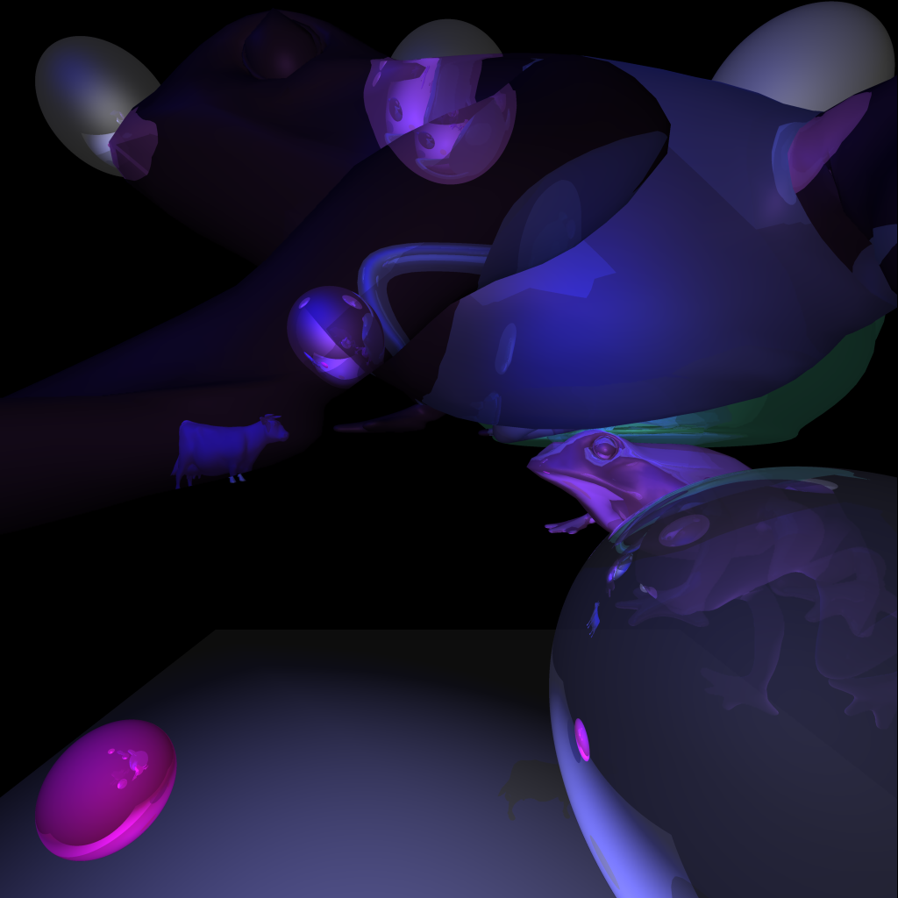
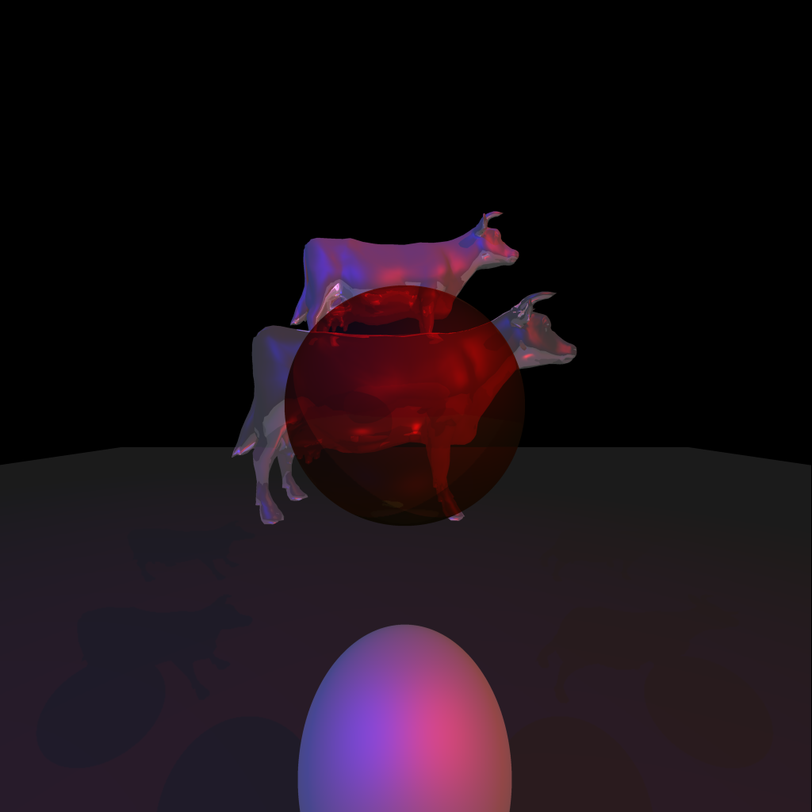
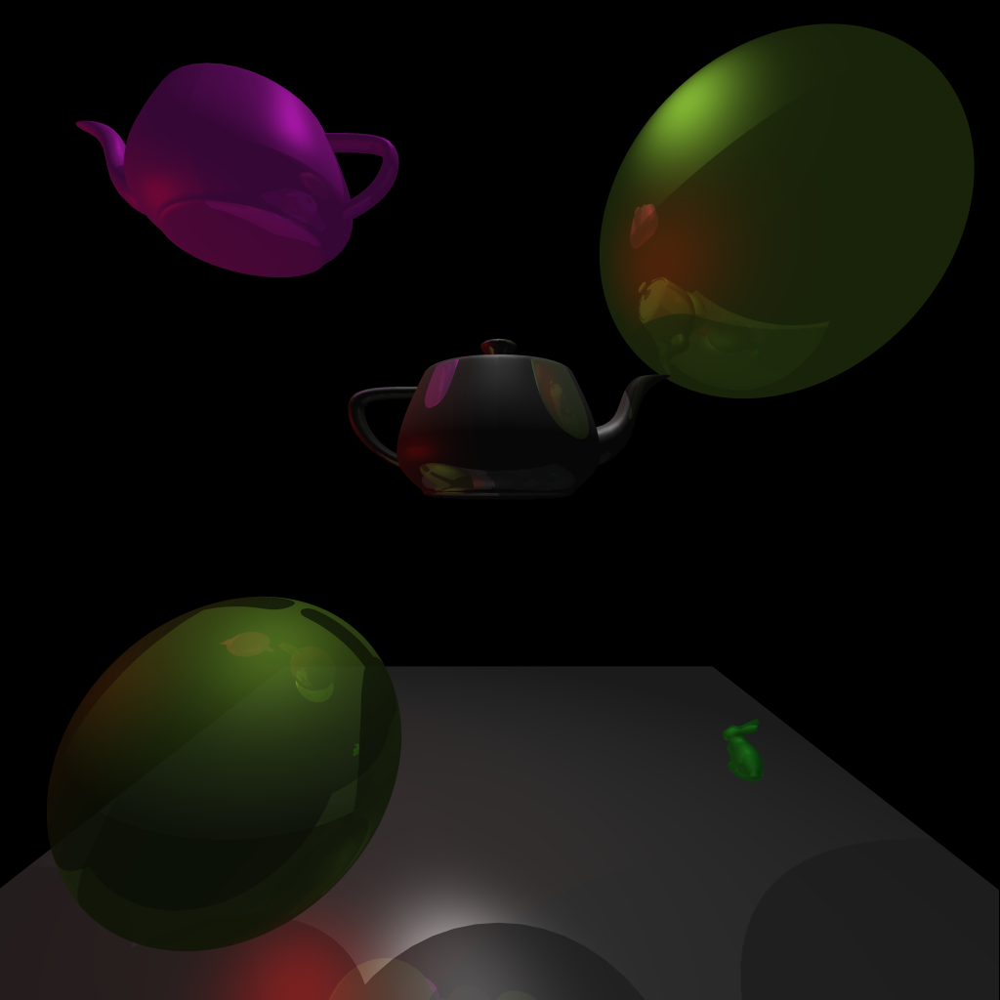
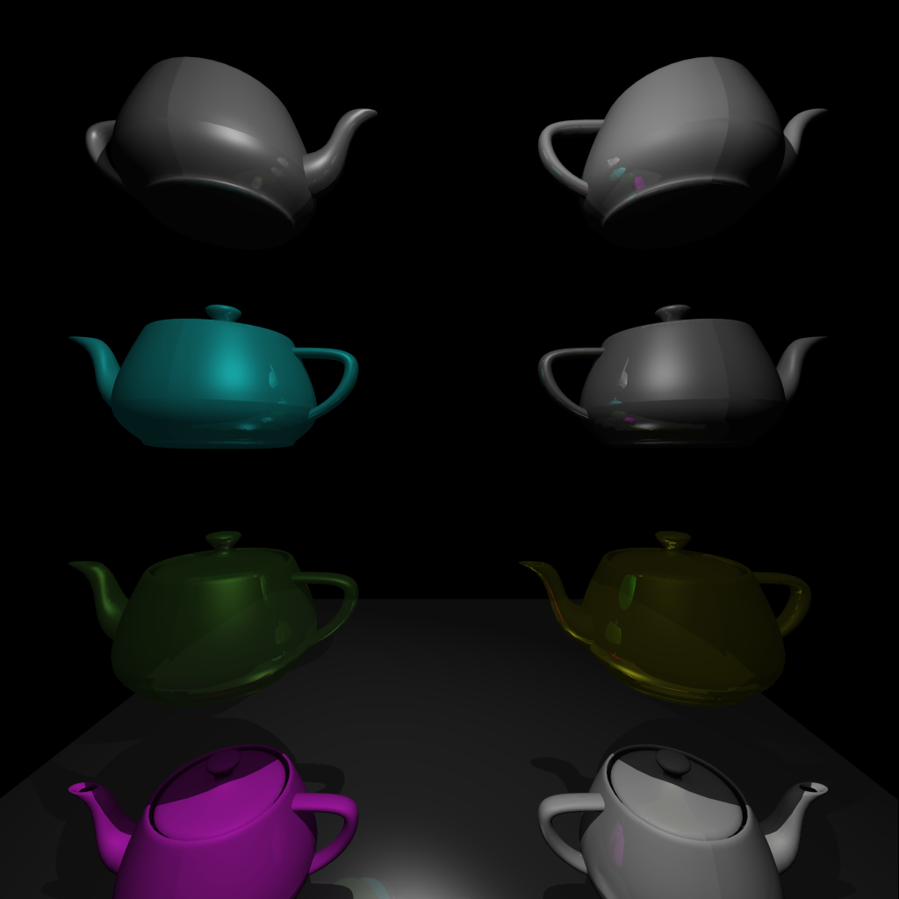

Input file: first_input.txt
This image satisfies the specifications from the instructions.
It took 3 minutes and 31 seconds to generate this image.

Input file: second_input.txt
It took 46.448 seconds to generate this image.

Input file: third_input.txt
It took 4.298 seconds to generate this image.

Input file: fourth_input.txt
It took 13.578 seconds to generate this image.